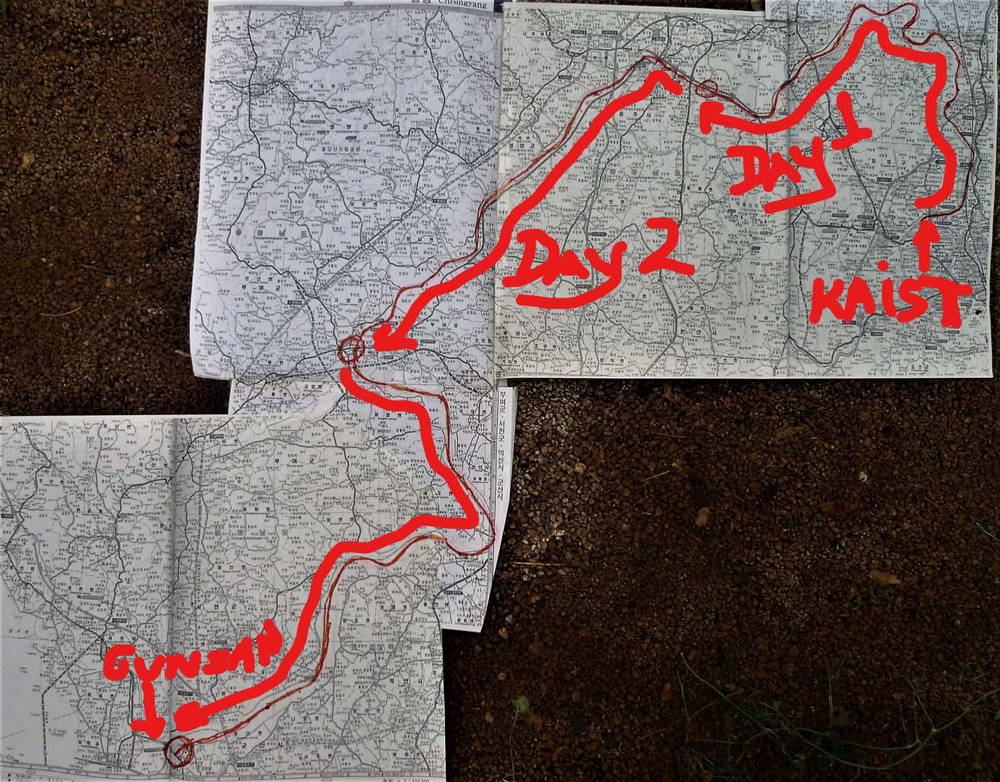
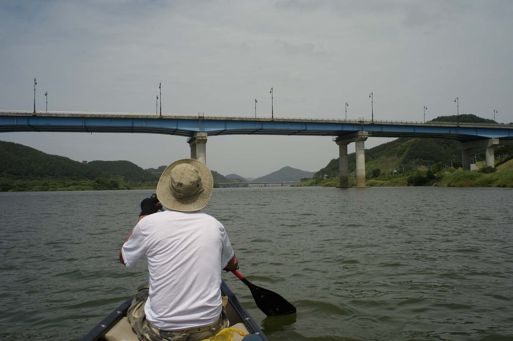

River Trip in Korea KAIST in Daejeon to the West Sea on Geum River (금강)
They said that it could not be done. I kept looking at the map and could see that the river that passed
in front of Korea Advanced Institute of Science and Engineering (KAIST) in Daejeon, the Gapcheon (갑천),
entered the Geumgang (금강) and did indeed arrive at the West Sea near Gunsan (군산). When I talked with my
Korean friends, they said that it was impossible to travel because there were too many dams and rapids
that the river was too shallow, while another said that the end of June was rainy season and the river
could be flooding. I was not discouraged; in fact, every person who told me that it was impossible only
made me want to do it more. Obviously, they didn’t understand that “American Can Do” culture which was
in my bones. This was the feedback I received when I told my friends and acquaintances that I wished to
travel by canoe from KAIST to Gunsan (군산) on the West Sea. To understand why I wanted to do this trip, I
must go back to the reason that my wife and I decided to move to Korea. I had visited Korea with my wife
many times, and I fell in love with the people, and the food, and the mountains. At the time I did not
think too much about the rivers, except being surprised at how few boats traveled on them. I had done
major canoe trips on many rivers in America including the Delaware, Susquehanna, Colorado, and Hudson.
When I studied the map of Korea, I could see that it had many rivers. Therefore, at the last minute, we
decided to bring our canoe. When our shipping container arrived at customs, they asked specifically why
I had brought a canoe. I told them that I wanted to travel on the rivers in Korea at which they looked
at me strangely and that was the end of the conversation.
Making plans

Now it was four years later, and my wife asked when was I going to use this boat and I answered, next
summer. The die was cast and I had to plan the trip over the winter. I knew that I needed a partner and
also to set a date. Looking at the calendar I realized that the June of 2008 was the only time
available. During Christmas, I visited with Professor Melissa Murphy to celebrate the end of the year
with her father, Brendan, who was teaching in Suwon (수원). I mentioned the trip and Brendan said the trip
sounded interesting and if the time was right, he would do the trip with me. I also found that he had
river experience in Newfoundland. We shared many ideas over the winter and decided that the last week of
June was the only time we were both available but we realized that if the monsoon rains came early, we
would have to cancel the trip. We also made a list of what we needed to bring and some of the logistics
to accomplish the trip. I measured the length of the river at 135 km and estimated that it was possible
in three days, travelling about 45 km each day. I would have to leave a car at Gunsan (군산) the night
before starting because we would need it at the end of the trip to return the canoe to Daejeon.
On the way to Gongju. (공주)

The final preparations were made the week before the trip but there was one more hurdle. Evidently, a
similar trip had been done a few years before and had ended in disaster. On that trip, the canoe had
turned over and the people had called 119 and had been rescued. Therefore, we had to notify the
province, Chungcheongnam-do (충천남도), of our trip with a plan and had to provide some background on our
prior river experience and information about our canoe and other details. On the day before the trip
began, we obtained consent. On the same day, we stocked up on peanut butter, jelly, bread, water, and
energy bars. That evening, we left the canoe along the river near the southeast corner of the KAIST
campus. The supplies that now included a tent, sleeping bags, food, and raingear were left in the
apartment of Brendan’s daughter. Late that night, I arrived in Gunsan (군산). I spent the night in our car
and got up at 6 a.m. and found that the first train to Daejeon left at 9:00 am. I then took a taxi to
the bus terminal and arrived in Daejeon at 10:30. We pushed off at 11:00 hoping to arrive in Gongju (공주)
by the evening.
That first day we encountered around five dams and a number of rapids. The dams required us to empty the
boat and carry it around the obstacles. The presence of rapids meant that we either shoot through them
avoiding the big rocks or carefully walk the canoe through and try not to slip and fall in the process.
If either of these had happened, the canoe would have overturned. Luckily we heard these obstacles far
in advance and we walked the canoe through most of them. We paddled all-day and stopped briefly for
dinner. Since it was getting dark around 8:30p.m, we realized that we would not make it to Gongju (공주).
We set up the tent, put the gear into the tent, turned he canoe over, and by 10:00 we were asleep for
the night.
I see a Bridge

The next morning we woke up at 6:30 to the sound of someone walking around the tent. A fisherman had
arrived and was setting up ten or more fishing poles near the tent. He kindly helped us load and we were
off by 8:00. After about an hour we arrived at Gongju (공주), where the river widens out appreciably. This
was a problem as the river is shallow in places and the current is sluggish so our progress was slow.
Many times we had to get out of the canoe and walk it. I remembered the words of my Korean friend who
warned that the river was too shallow. We knew that we had to make up for the day before, so we paddled
for at least ten hours stopping briefly for food and coffee at one of the fishing camps along the river.
The hardest thing about that day was the heat and the sun. The other challenge was seeing a bridge far
ahead and looking at it for hours before we would finally pass it. Also we had learnt that a bridge
usually meant rapids or a dam, so they were not welcome. I remember saying to Brendan that I hoped that
we would find a dock to tie the canoe up to and we could leave the gear in the canoe. This is exactly
what happened when we arrived in Buyeo (부여) around 7:00 that evening. The owners of one of the boat
landings let us leave the canoe at his secure dock. That night we slept in a motel and had a good
dinner.
Destination reached; goal achieved.

After breakfast we were off by 8:30 a.m. We hoped would be our last day on the river. This was the
hardest day because the river was very wide, there was little current, and in the afternoon we had a
strong westerly wind in our face. I remember watching this one bridge for three hours before finally
passing under it. The good thing about this part of the river is that there were no rapids or dams. In
the afternoon we were worried that we wouldn’t make it. The sun was setting and it was becoming dark.
Luckily, the wind let up around 6:00 p.m. and I saw the final bridge ahead around 7:00 pm. Around 8:00
p.m we finally achieved our goal, reaching a location where the canoe was docked immediately before the
Gunsan (군산) Dam. We wandered through thick underbrush and found a road. We then had a taxi take us to a
motel for the night. The next morning, we took a taxi to the train station, picked up the car and drove
it to the canoe and loaded it on the car roof. We were back at KAIST by noon on the fourth day. We were
both tired but felt great that we had accomplished the trip from KAIST to the West Sea.
A few overall comments are in order. We were surprised at how few boats there were on the river. In our
three-day trip, we saw fewer than ten boats. On the third day, we did see a boat with a water skier. We
never saw anyone swimming but did see a few fishermen along the way. The water was also very clear the
second and third day. I can’t say that it was drinkable but there were no signs of pollution. Now I can
add one more thing I love about Korea, the rivers. This river was so beautiful with mountains coming
close to the shore. Beautiful streams entered along the way. I kept thinking that the river had probably
changed little over the last centuries. Now we are planning the next trip from Chuncheon (춘천) in
Gangwon-do (강원도) to the West Sea via the Hangam River.